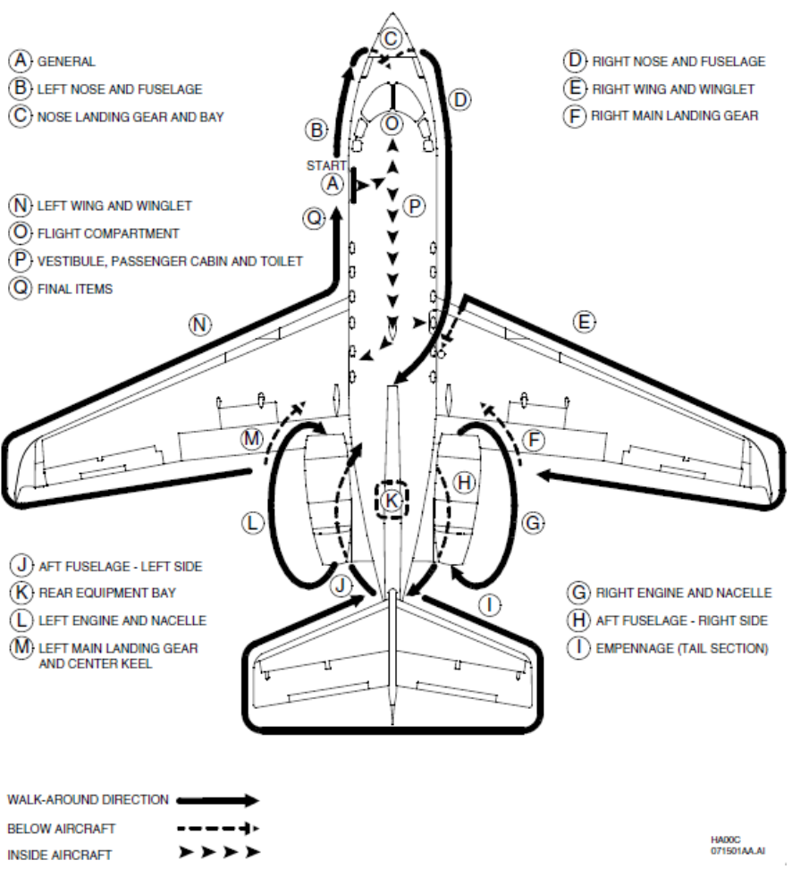

Post-Flight Inspection¶
Instructional Data
Note
Before you proceed with this inspection make sure that you have read and understood the Introduction section at the front of this schedule.
{kind=link}
Post-Flight Checks Guidlines
Preamble
- General
- Left Nose and Fuselage
- Nose Landing Gear and Bay
- Right Nose and Fuselage
- Right Wing
- Right Main Landing Gear
- Right Engine and Nacelle
- Aft Fuselage — Right Side
- Empennage (Tail Section)
- Aft Fuselage — Left Side
- Rear Equipment Bay
- Left Engine and Nacelle
- Left Main Landing Gear and Center Keel
- Left Wing
- Flight Compartment
- Vestibule, Passenger Cabin and Toilet Compartment
- Final Items (Recommended)
List of Illustrations
General Figure 1 - Recommended Walk-Around Sequence Airplanes Without Winglets Figure 2 - Recommended Walk-Around Sequence Airplanes With Winglets
Preamble¶
The POST FLIGHT CHECKS supersede and replace the POST FLIGHT INSPECTION which was previously listed in the Hawker 800XP AIRCRAFT FLEXIBLE MAINTENANCE SCHEDULE.
It is the responsibility of the Pilot-in-Command and Flight Crew to make sure the items contained within are accomplished after the last flight of the day. The Flight Crew or appropriately rated maintenance personnel may accomplish all items. It is recommended these pages be photocopied and used as a check-off sheet after the last flight of the day.
Note
Requirements marked withpreceding the check indicate items which have the potential to cause delays if not corrected promptly. These items should be rectified immediately after the last flight of the day in order to avoid any operational delays which could occur before the next flight.
Note
These checks should be accomplished after the completion of the Leaving Airplane (Terminating Flight) Checks listed in the Normal Procedures section of the Approved Airplane Flight Manual.
Note
Refer to Figure 1 or Figure 2 (as applicable) — Recommended Walk-Around Sequence
{kind=link}
{kind=link}
{kind=link}
{kind=link}
{kind=link}
Figure 1: Post Flight Checkes–Recommended Walk-Around Sequnece without Winglets
{kind=link}
Figure 2: Post Flight Checkes–Recommended Walk-Around Sequnece with Winglets